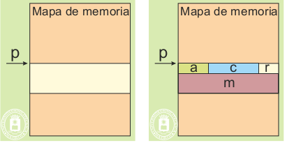
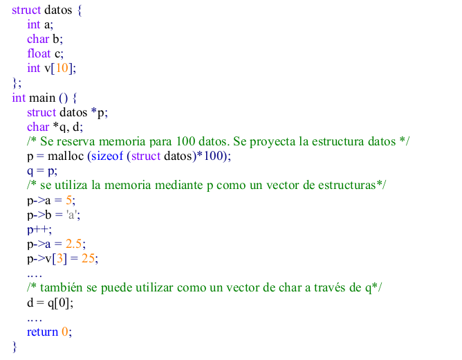
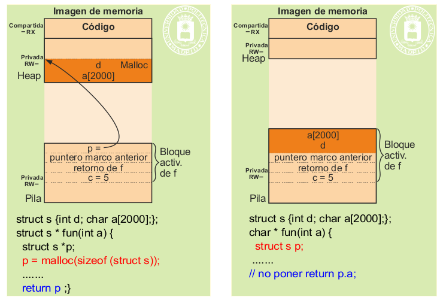
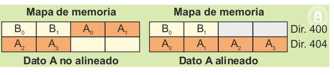

En esta sección se plantean varios temas relacionados con la utilización de datos, especialmente de datos dinámicos.
Un programa puede obtener lo que denominaremos memoria en bruto mediante los siguientes procedimientos:
Mediante las bibliotecas del lenguaje (con funciones tales como malloc, new, ...).
Mediante servicios del sistema operativo, servicios que se detallan más adelante, tales como:
Fichero proyectado en memoria.
Región de memoria compartida.
Nueva región de memoria.
En todos los casos, el programa recibe un puntero, referencia o manejador a esa zona memoria reservada a través del cual podrá utilizarla. La situación se presenta en la parte izquierda de la figura 4.45. Para utilizar dicha memoria el programador, que utiliza un lenguaje de alto nivel, debe proyectar sobre esa zona un conjunto de variables que le permitan referenciar partes de esa zona. Por ejemplo, se puede proyectar un vector de bytes, una matriz de enteros, un vector de estructuras, etc.
Los datos así proyectados se utilizan a través del puntero devuelto por el servicio o por la función del lenguaje. En el siguiente ejemplo se puede observar que se proyecta un vector de estructura tipo datos.
Se puede observar que también se ha proyectado un vector de bytes, por lo que se puede utilizar la zona bajo estas dos ópticas, con los problemas que ello puede entrañar. Cuando se utiliza una región de memoria entre varios procesos hay que tener extremado cuidado en proyectar los mismos tipos datos en todos los programas. En caso contrario, se producirán resultados erróneos. Una buena forma de evitar este problema es utilizar, en la elaboración de todos los programas que compartan la región, un único fichero de declaración de variables común para todos ellos (en C se utilizará un fichero .h común). Si, en cualquier momento, se modifican los tipos de datos proyectados, la modificación quedará reflejada en todos los programas.
Los errores más frecuentes a la hora de manejar memoria dinámica se comentan a continuación.
Usarla sin necesidad. La memoria dinámica es mucho más costosa que una variable local. La figura 4.46 muestra la diferencia entre reservar memoria dinámica para un vector de 2000 bytes y la declaración como una variable local.
En el caso del malloc, el espacio reservado sobrevive a la función que lo solicitó, por lo que ésta puede devolver p, para que siga siendo utilizado. Por eso la asignación dinámica es idónea para funciones que crean estructuras dinámicas (listas, árboles) que deben ser utilizadas por otras funciones. En el caso de declaración local, el coste computacional es mucho menor que con el malloc. Sin embargo, la zona de memoria asignada ya no es válida al finalizar la función, puesto que el bloque de activación de la función se recupera en el retorno de f. Esto significa que la función que declara p no debe devolver dirección de p.a.
*Pérdidas o goteras de memoria. Las pérdidas o goteras de memoria se producen cuando el programa crea datos dinámicamente y no libera la memoria ocupada cuando esos datos ya no interesan. Por tanto, hay que prestar especial atención a la liberación de datos obsoletos.
*Acceso a un dato obsoleto. Este problema se produce cuando se accede a los datos mediante una referencia (p. ej. un puntero), después de haber eliminado el dato. Hay que tener en cuenta que al eliminar el dato
no se elimina la referencia, por lo que se puede intentar su utilización.
Si el dato obsoleto pertenece a una región o trozo de región eliminada, el hardware detectará el intento de
violación de memoria y el sistema operativo enviará una señal al proceso, que suele matarlo.
En caso contrario se accede a basura, generándose un resultado inesperado, lo que suele producir un error
difícil de diagnosticar, puesto que puede aparecer solamente bajo determinadas condiciones de ejecución.
Hay que tener en cuenta que la zona que ocupaba el dato puede no haber sido modificada aun.
*Desbordamiento de un dato múltiple. Este problema se produce cuando el índice usado en el dato múltiple queda fuera del rango válido. Por ejemplo, cuando accedemos al elemento a[101] de un vector declarado de 100 elementos. El acceso se realizará (nadie lo impide) a la posición de memoria siguiente al espacio reservado para ese vector. Esa dirección corresponderá a otro dato, por lo que el programa producirá
un resultado inesperado, difícil de diagnosticar. Solamente en caso de salirse de la región en la que está
ese dato, el hardware detectará el intento de violación de memoria.
*Declaraciones compatibles. Como se ha indicado anteriormente, en el uso de memoria compartida es necesario que las declaraciones de datos sean las mismas en todos los programas que comparten esa memoria.
*Alineación en los datos. No tener en cuenta la ocupación real de los datos debidos a la alineación. Esta
ocupación puede depender del tipo de máquina para el que se compile el programa, así como de los criterios de compilación que se utilicen, por ejemplo, si se utiliza optimización.
El objetivo de la alineación de datos es evitar que el acceso a un dato de tipo simple requiera dos accesos a memoria. El problema surge porque algunos datos ocupan menos de una palabra de memoria. Según la figura 4.47, el dato A compuesto por 4 bytes requeriría el acceso a las dos palabras de memoria 400 y 404.
*La alineación depende de la arquitectura del computador y del compilador, por lo que el mismo programa
puede dar problemas de alineación en una máquina y no darlo en otra.
*La alineación evita que un dato simple quede partido en dos palabras de memoria.
*La alineación se realiza por razones de eficiencia en tiempo de ejecución.
*La alineación supone una pérdida de espacio de memoria, puesto que hay que dejar huecos sin utilizar
para conseguir que los datos estén alineados correctamente, como se desprende de la figura 4.48, que refleja el almacenamiento de la estructura siguiente: